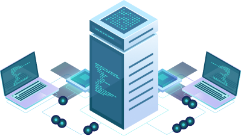
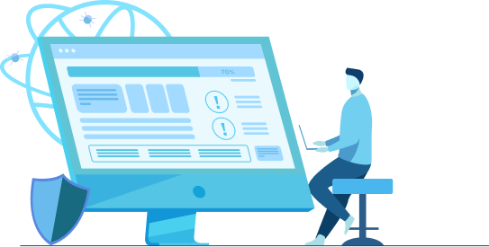

People Prime Worldwide specializes in finding and hiring exceptional IT Infrastructure professionals to bolster your organization's technological foundation. Our candidates are skilled in crucial areas like network and systems administration, cloud computing, cybersecurity, database management, IT service management, and end-user computing. We leverage expertise in leading technologies like AWS, Azure, VMware, and ITIL frameworks to ensure your IT infrastructure is robust, scalable, and secure. Choose People Prime Worldwide for the talent you need to maintain and grow your IT capabilities.
Database Management Systems (DBMS), Database Design and Modeling, SQL (Structured Query Language)...
Amazon Web Services (AWS), EC2 and Lambda, S3 and EBS, ECS and EKS,K2, RDS and DynamoDB...
IT Service Management, Change Management, Incident Management, Problem Management, Asset Management...
Service Strategy, Service Design, Service Transition, Service Operation, Continual Service Improvement (CSI)...

Routers, Switches, Firewalls, Load Balancers, VPNs...

Storage (NAS), Netapp 7-mode, Netapp Snap suite of products Snapmirror...
Critical Infrastructure Security, Network Security,Endpoint Security,Application Security,Cloud Security ...

IBM WebSphere Application Server, Oracle WebLogic Application Server, IBM MQ (Message Queue), Microsoft BizTalk Server...


TCP/IP (Transmission Control Protocol/Internet Protocol), Routing & Switching, Network Protocols...

Amazon Web Services (AWS), EC2 and Lambda, S3 and EBS, ECS and EKS,K2, RDS and DynamoDB...

Unified Communications CISCO, CISCO Network Admin, CISCO ACI, CISCO Meraki – Cloud Network...

Identity and Access Management, Security Information and Event Management (SIEM), Endpoint Security...